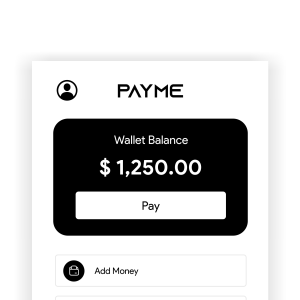
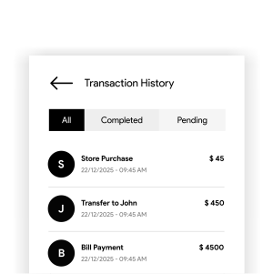

← Back to Work

PayMe.
Solving Transactional Anxiety: A UX Case Study on Building Trust in Digital Finance
Solving Transactional Anxiety: A UX Case Study on Building Trust in Digital Finance
PayMe is a conceptual digital wallet app designed to simplify everyday payments and reduce user anxiety during transactions.
Disclaimer: The goal of this project was to demonstrate research-driven UX thinking, specifically exploring how clarity and simplicity can build trust.
Digital wallet apps are widely used, yet many users still feel stress and uncertainty while making payments. I wanted to solve the anxiety of "Did my money go through?" through better UI/UX.
1-on-1 Interviews
Survey Responses
Competitor Audits
“I always check my balance first. If I don’t see it clearly, I feel unsure.”
“When a payment shows ‘processing’, I keep staring at the screen.”
“There are too many buttons. I just want to pay quickly.”
"Users need a simple and transparent wallet experience that allows them to complete payments confidently, without confusion, hesitation, or fear of failure."
Feature-heavy interfaces cause visual fatigue and choice paralysis.
Lack of micro-feedback during loading leads to payment anxiety.
Prioritizing the "Pay" intent over secondary promotional banners.
Communicating system status at every millisecond of the transaction.

Balance is shown clearly at the top with one primary action ("Pay"). Secondary actions are kept minimal to prevent search fatigue.
Distinct visual states for Success, Pending, and Failed. Used human-friendly messages instead of technical banking codes.
